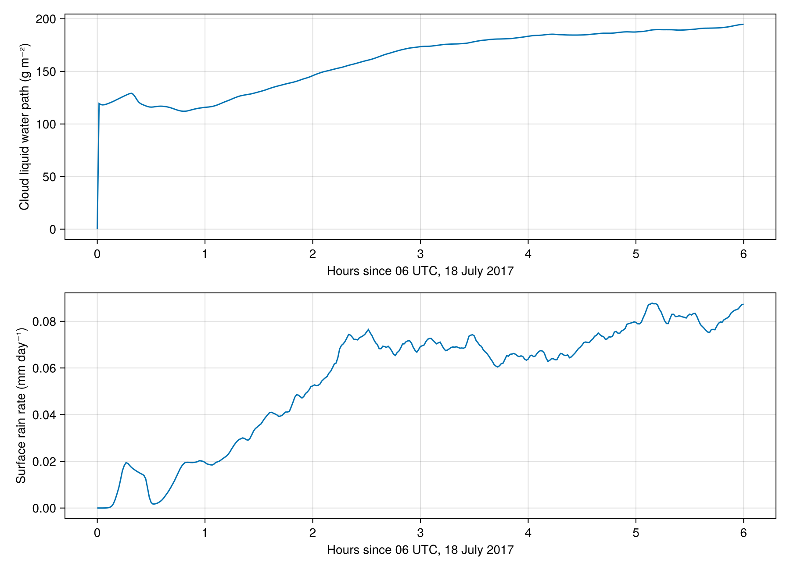

Eastern North Atlantic
This example builds, runs, and analyzes the public Covert et al. (2022) development case for 18 July 2017, 06–12 UTC. The domain is 8.96 km square with 35 m horizontal spacing and 192 reconstructed vertical levels. It uses prescribed surface fluxes, simple longwave radiation, and no mean-wind nudging. This configuration differs from both official LASSO and the larger, nine-hour published experiment.
Fetch the inputs with julia data_wrangling/fetch_covert_inputs.jl, then run julia --project cases/eastern_north_atlantic.jl on an NVIDIA GPU.
using BreezeLab
using Oceananigans, Oceananigans.Units
using CairoMakieBuild the simulation
The package constructor returns a case without advancing its clock. Here we choose fixed-number P3 microphysics (:p3_n75); :one_moment and :p3_aer2 are also available. The aerosol-coupled member uses a prescribed CCN reservoir.
arch = GPU()
Nx, Ny = 256, 256
z_faces = covert_public_bin_vertical_faces()
stop_time = 6hours
timeseries_interval = 60seconds
profile_interval = 1hour
slice_interval = 1hour
output_dir = joinpath(pkgdir(BreezeLab), "output", "documentation", "ena")
case = eastern_north_atlantic(; arch, Nx, Ny, z_faces, stop_time,
microphysics = :p3_n75,
output_dir, output_prefix = "ena",
timeseries_interval, profile_interval, slice_interval)
simulation = case.simulation;Run
Save the configuration, input checksums, and protocol overrides alongside the output. This six-hour simulation is a substantial GPU run; output writers replace files with the same prefix when the example is rerun.
mkpath(output_dir)
write_provenance(joinpath(output_dir, "provenance.toml"), case)
run!(simulation)[ Info: Initializing simulation...
[ Info: iter 0, t = 0 seconds, Δt = 500 ms, wall = 2.559 minutes | max|w| 0.00 m/s, LWP 0.0 g/m², CF 0.00, max qᶜˡ 0.00e+00, max qʳ 0.00e+00, rain 0.000 mm/d, T ∈ [207.2, 294.4]
[ Info: ... simulation initialization complete (1.717 minutes)
[ Info: Executing initial time step...
[ Info: ... initial time step complete (17.805 seconds).
[ Info: iter 1200, t = 10 minutes, Δt = 500 ms, wall = 6.255 minutes | max|w| 0.26 m/s, LWP 122.4 g/m², CF 1.00, max qᶜˡ 6.27e-04, max qʳ 1.60e-06, rain 0.004 mm/d, T ∈ [207.2, 294.8]
[ Info: iter 2400, t = 20 minutes, Δt = 500 ms, wall = 9.546 minutes | max|w| 2.35 m/s, LWP 128.3 g/m², CF 1.00, max qᶜˡ 8.65e-04, max qʳ 5.59e-06, rain 0.017 mm/d, T ∈ [207.2, 295.0]
[ Info: iter 3600, t = 30 minutes, Δt = 500 ms, wall = 12.831 minutes | max|w| 2.36 m/s, LWP 116.0 g/m², CF 1.00, max qᶜˡ 8.36e-04, max qʳ 1.20e-05, rain 0.002 mm/d, T ∈ [207.2, 294.9]
[ Info: iter 4800, t = 40 minutes, Δt = 500 ms, wall = 16.097 minutes | max|w| 3.33 m/s, LWP 115.8 g/m², CF 1.00, max qᶜˡ 1.00e-03, max qʳ 1.64e-05, rain 0.008 mm/d, T ∈ [207.2, 295.0]
[ Info: iter 6000, t = 50 minutes, Δt = 500 ms, wall = 19.363 minutes | max|w| 3.57 m/s, LWP 112.4 g/m², CF 1.00, max qᶜˡ 1.01e-03, max qʳ 2.03e-05, rain 0.020 mm/d, T ∈ [207.2, 295.0]
[ Info: iter 7200, t = 1 hour, Δt = 500 ms, wall = 22.637 minutes | max|w| 3.84 m/s, LWP 115.8 g/m², CF 1.00, max qᶜˡ 1.16e-03, max qʳ 2.02e-05, rain 0.020 mm/d, T ∈ [207.2, 294.9]
[ Info: iter 8400, t = 1.167 hours, Δt = 500 ms, wall = 25.888 minutes | max|w| 3.60 m/s, LWP 120.3 g/m², CF 1.00, max qᶜˡ 1.09e-03, max qʳ 2.27e-05, rain 0.021 mm/d, T ∈ [207.2, 294.9]
[ Info: iter 9600, t = 1.333 hours, Δt = 500 ms, wall = 29.136 minutes | max|w| 3.88 m/s, LWP 126.8 g/m², CF 1.00, max qᶜˡ 1.10e-03, max qʳ 2.04e-05, rain 0.030 mm/d, T ∈ [207.2, 294.9]
[ Info: iter 10800, t = 1.500 hours, Δt = 500 ms, wall = 32.399 minutes | max|w| 4.30 m/s, LWP 130.5 g/m², CF 1.00, max qᶜˡ 1.15e-03, max qʳ 3.34e-05, rain 0.035 mm/d, T ∈ [207.2, 294.9]
[ Info: iter 12000, t = 1.667 hours, Δt = 500 ms, wall = 35.641 minutes | max|w| 3.21 m/s, LWP 135.9 g/m², CF 1.00, max qᶜˡ 1.05e-03, max qʳ 3.32e-05, rain 0.040 mm/d, T ∈ [207.2, 294.9]
[ Info: iter 13200, t = 1.833 hours, Δt = 500 ms, wall = 38.881 minutes | max|w| 3.15 m/s, LWP 140.1 g/m², CF 1.00, max qᶜˡ 1.12e-03, max qʳ 4.39e-05, rain 0.047 mm/d, T ∈ [207.2, 294.9]
[ Info: iter 14400, t = 2 hours, Δt = 500 ms, wall = 42.128 minutes | max|w| 3.49 m/s, LWP 145.9 g/m², CF 1.00, max qᶜˡ 1.05e-03, max qʳ 3.34e-05, rain 0.052 mm/d, T ∈ [207.2, 294.8]
[ Info: iter 15600, t = 2.167 hours, Δt = 500 ms, wall = 45.404 minutes | max|w| 3.42 m/s, LWP 151.3 g/m², CF 1.00, max qᶜˡ 1.00e-03, max qʳ 4.78e-05, rain 0.059 mm/d, T ∈ [207.2, 294.8]
[ Info: iter 16800, t = 2.333 hours, Δt = 500 ms, wall = 48.640 minutes | max|w| 4.02 m/s, LWP 155.8 g/m², CF 1.00, max qᶜˡ 9.98e-04, max qʳ 4.00e-05, rain 0.074 mm/d, T ∈ [207.2, 294.8]
[ Info: iter 18000, t = 2.500 hours, Δt = 500 ms, wall = 51.883 minutes | max|w| 3.10 m/s, LWP 160.4 g/m², CF 1.00, max qᶜˡ 1.04e-03, max qʳ 3.85e-05, rain 0.075 mm/d, T ∈ [207.2, 294.8]
[ Info: iter 19200, t = 2.667 hours, Δt = 500 ms, wall = 55.153 minutes | max|w| 3.34 m/s, LWP 165.9 g/m², CF 1.00, max qᶜˡ 9.79e-04, max qʳ 3.67e-05, rain 0.069 mm/d, T ∈ [207.2, 294.8]
[ Info: iter 20400, t = 2.833 hours, Δt = 500 ms, wall = 58.394 minutes | max|w| 3.39 m/s, LWP 170.8 g/m², CF 1.00, max qᶜˡ 9.94e-04, max qʳ 4.92e-05, rain 0.070 mm/d, T ∈ [207.3, 294.7]
[ Info: iter 21600, t = 3 hours, Δt = 500 ms, wall = 1.027 hours | max|w| 3.66 m/s, LWP 173.5 g/m², CF 1.00, max qᶜˡ 9.84e-04, max qʳ 4.40e-05, rain 0.069 mm/d, T ∈ [207.3, 294.7]
[ Info: iter 22800, t = 3.167 hours, Δt = 500 ms, wall = 1.081 hours | max|w| 3.49 m/s, LWP 174.9 g/m², CF 1.00, max qᶜˡ 9.69e-04, max qʳ 5.43e-05, rain 0.071 mm/d, T ∈ [207.3, 294.7]
[ Info: iter 24000, t = 3.333 hours, Δt = 500 ms, wall = 1.136 hours | max|w| 3.68 m/s, LWP 176.1 g/m², CF 1.00, max qᶜˡ 9.46e-04, max qʳ 5.00e-05, rain 0.069 mm/d, T ∈ [207.3, 294.7]
[ Info: iter 25200, t = 3.500 hours, Δt = 500 ms, wall = 1.190 hours | max|w| 3.72 m/s, LWP 178.3 g/m², CF 1.00, max qᶜˡ 9.86e-04, max qʳ 4.29e-05, rain 0.074 mm/d, T ∈ [207.3, 294.6]
[ Info: iter 26400, t = 3.667 hours, Δt = 500 ms, wall = 1.244 hours | max|w| 3.72 m/s, LWP 180.5 g/m², CF 1.00, max qᶜˡ 9.90e-04, max qʳ 5.12e-05, rain 0.063 mm/d, T ∈ [207.3, 294.6]
[ Info: iter 27600, t = 3.833 hours, Δt = 500 ms, wall = 1.298 hours | max|w| 3.62 m/s, LWP 181.2 g/m², CF 1.00, max qᶜˡ 9.38e-04, max qʳ 4.46e-05, rain 0.066 mm/d, T ∈ [207.3, 294.6]
[ Info: iter 28800, t = 4 hours, Δt = 500 ms, wall = 1.352 hours | max|w| 3.51 m/s, LWP 183.4 g/m², CF 1.00, max qᶜˡ 9.89e-04, max qʳ 5.90e-05, rain 0.064 mm/d, T ∈ [207.3, 294.5]
[ Info: iter 30000, t = 4.167 hours, Δt = 500 ms, wall = 1.406 hours | max|w| 3.95 m/s, LWP 185.0 g/m², CF 1.00, max qᶜˡ 9.52e-04, max qʳ 4.17e-05, rain 0.064 mm/d, T ∈ [207.3, 294.5]
[ Info: iter 31200, t = 4.333 hours, Δt = 500 ms, wall = 1.461 hours | max|w| 3.77 m/s, LWP 184.8 g/m², CF 1.00, max qᶜˡ 1.04e-03, max qʳ 4.06e-05, rain 0.065 mm/d, T ∈ [207.3, 294.4]
[ Info: iter 32400, t = 4.500 hours, Δt = 500 ms, wall = 1.514 hours | max|w| 4.21 m/s, LWP 184.7 g/m², CF 1.00, max qᶜˡ 9.62e-04, max qʳ 4.88e-05, rain 0.070 mm/d, T ∈ [207.3, 294.4]
[ Info: iter 33600, t = 4.667 hours, Δt = 500 ms, wall = 1.568 hours | max|w| 3.78 m/s, LWP 186.1 g/m², CF 1.00, max qᶜˡ 9.55e-04, max qʳ 3.98e-05, rain 0.074 mm/d, T ∈ [207.3, 294.4]
[ Info: iter 34800, t = 4.833 hours, Δt = 500 ms, wall = 1.622 hours | max|w| 3.75 m/s, LWP 187.0 g/m², CF 1.00, max qᶜˡ 9.97e-04, max qʳ 3.64e-05, rain 0.075 mm/d, T ∈ [207.3, 294.4]
[ Info: iter 36000, t = 5 hours, Δt = 500 ms, wall = 1.677 hours | max|w| 3.85 m/s, LWP 187.5 g/m², CF 1.00, max qᶜˡ 9.59e-04, max qʳ 4.66e-05, rain 0.080 mm/d, T ∈ [207.3, 294.3]
[ Info: iter 37200, t = 5.167 hours, Δt = 500 ms, wall = 1.731 hours | max|w| 3.74 m/s, LWP 189.6 g/m², CF 1.00, max qᶜˡ 9.79e-04, max qʳ 3.78e-05, rain 0.087 mm/d, T ∈ [207.3, 294.3]
[ Info: iter 38400, t = 5.333 hours, Δt = 500 ms, wall = 1.785 hours | max|w| 3.83 m/s, LWP 189.6 g/m², CF 1.00, max qᶜˡ 9.76e-04, max qʳ 5.03e-05, rain 0.083 mm/d, T ∈ [207.3, 294.2]
[ Info: iter 39600, t = 5.500 hours, Δt = 500 ms, wall = 1.839 hours | max|w| 3.43 m/s, LWP 189.8 g/m², CF 1.00, max qᶜˡ 9.83e-04, max qʳ 5.07e-05, rain 0.083 mm/d, T ∈ [207.3, 294.2]
[ Info: iter 40800, t = 5.667 hours, Δt = 500 ms, wall = 1.893 hours | max|w| 3.96 m/s, LWP 191.1 g/m², CF 1.00, max qᶜˡ 1.03e-03, max qʳ 4.09e-05, rain 0.075 mm/d, T ∈ [207.3, 294.2]
[ Info: iter 42000, t = 5.833 hours, Δt = 500 ms, wall = 1.947 hours | max|w| 3.91 m/s, LWP 192.0 g/m², CF 1.00, max qᶜˡ 9.70e-04, max qʳ 4.52e-05, rain 0.081 mm/d, T ∈ [207.3, 294.3]
[ Info: Simulation is stopping after running for 1.985 hours.
[ Info: Simulation time 6 hours equals or exceeds stop time 6 hours.
[ Info: iter 43200, t = 6 hours, Δt = 500 ms, wall = 2.001 hours | max|w| 3.54 m/s, LWP 194.8 g/m², CF 1.00, max qᶜˡ 1.05e-03, max qʳ 6.15e-05, rain 0.087 mm/d, T ∈ [207.3, 294.1]
Analyze cloud water and rain
Read the saved horizontal means. Cloud liquid water path is stored in kg m⁻²; multiply by 1000 for g m⁻². The downward surface rain mass flux is in kg m⁻² s⁻¹; multiplying by seconds per day gives mm day⁻¹ of liquid water. These are model diagnostics; comparison with ARM requires matching its sampling and retrieval definitions.
filename = joinpath(output_dir, "ena_timeseries.jld2")
lwp = FieldTimeSeries(filename, "lwp")
rain = FieldTimeSeries(filename, "rain_flux")
times = lwp.times ./ hour
cloud_water_path = [1e3 * lwp[n][1, 1, 1] for n in eachindex(times)]
rain_rate = [86400 * rain[n][1, 1, 1] for n in eachindex(times)]
fig = Figure(size = (900, 650))
ax_lwp = Axis(fig[1, 1], xlabel = "Hours since 06 UTC, 18 July 2017",
ylabel = "Cloud liquid water path (g m⁻²)")
ax_rain = Axis(fig[2, 1], xlabel = "Hours since 06 UTC, 18 July 2017",
ylabel = "Surface rain rate (mm day⁻¹)")
lines!(ax_lwp, times, cloud_water_path)
lines!(ax_rain, times, rain_rate)
save(joinpath(output_dir, "cloud_water_and_rain.png"), fig)
cp(joinpath(output_dir, "cloud_water_and_rain.png"), "eastern_north_atlantic.png"; force=true);
Execution environment
using InteractiveUtils: versioninfo
versioninfo()
import Pkg
Pkg.status()Julia Version 1.12.7
Commit 6d172b025e4 (2026-08-15 08:05 UTC)
Build Info:
Official https://julialang.org release
Platform Info:
OS: Linux (x86_64-linux-gnu)
CPU: 16 × AMD EPYC 7R13 Processor
WORD_SIZE: 64
LLVM: libLLVM-18.1.7 (ORCJIT, znver3)
GC: Built with stock GC
Threads: 6 default, 1 interactive, 6 GC (on 16 virtual cores)
Environment:
JULIA_NUM_PRECOMPILE_TASKS = 6
JULIA_PKG_PRECOMPILE_AUTO = 0
JULIA_DEPOT_PATH = /shared/home/greg/breezelab-runs/docs-20261007-8dc824d/depot-compute/AMD_EPYC_7R13_Processor_:/shared/home/greg/breezelab-runs/docs-20261007-8dc824d/depot-login:/shared/home/greg/breezelab-runs/20261006/depot:/shared/home/greg/.julia:
JULIA_NUM_THREADS = 6
Status `~/breezelab-runs/docs-20261007-8dc824d/source/docs/Project.toml`
[95b707ca] BreezeLab v0.1.0 `..`
[13f3f980] CairoMakie v0.15.15
[e30172f5] Documenter v1.19.0
[98b081ad] Literate v2.21.0
[9e8cae18] Oceananigans v0.113.3 `https://github.com/CliMA/Oceananigans.jl#847e125`
This page was generated using Literate.jl.